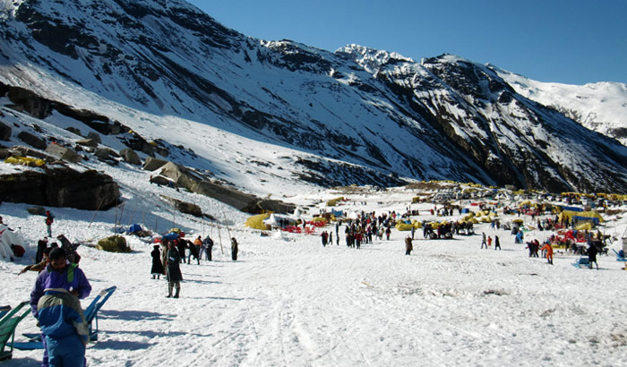
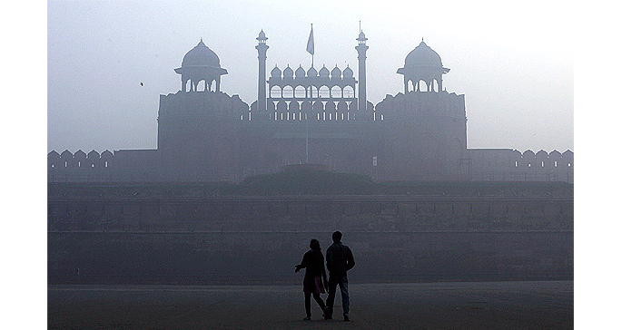

12:38 AM 11-2-16
Nainital is a Himalayan resort town in the Kumaon region of India’s Uttarakhand state, at an elevation of roughly 2,000m. Formerly a British hill station, it’s set around Nainital Lake, a popular boating site with Naina Devi Hindu Temple on its north shore. There’s shopping in Bara Bazaar, and hiking trails with mountain views crisscross the surrounding area’s wooded hills.
Manali is a high-altitude Himalayan resort town in India’s northern Himachal Pradesh state. It has a reputation as a backpacking center and honeymoon destination. Set on the Beas River, it’s a gateway for skiing in the Solang Valley and trekking in Parvati Valley. It's also a jumping-off point for paragliding, rafting and mountaineering in the Pir Panjal mountains, home to 4,000m-high Rohtang Pass.
The Red Fort was the residence of the Mughal emperor of India for nearly 200 years, until 1857. It is located in the centre of Delhi and houses a number of museums.